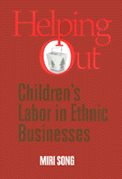

An examination of children's work roles in ethnic businesses
An examination of children's work roles in ethnic businesses


 An examination of children's work roles in ethnic businesses
An examination of children's work roles in ethnic businesses

|  |
Helping OutChildren's Labor in Ethnic BusinessesMiri Songpaper EAN: 978-1-56639-709-4 (ISBN: 1-56639-709-X) |
The growing body of literature on ethnic businesses has emphasized the importance of small family-based businesses as a key form of immigrant adaptation. Although there have been numerous references to the importance of "family labor" as a key ethnic resource, few studies have examined the work roles and family dynamics entailed in various kinds of ethnic businesses.
Helping Out addresses the centrality of children's labor participation in such family enterprises. Discussing the case of Chinese families running take-out food shops in Britain, Miri Song examines the ways in which children contribute their labor and the context in which children come to understand and believe in "helping out" as part of a "family work contract." Song explores the implications of these children's labor participation for family relationships, cultural identity, and the future of the Chinese community in Britain. While doing so, she argues that the practical importance and the broader meanings of children's work must be understood in the context of immigrant families' experiences of migration and ethnic minority status in Western, white-majority societies.
Excerpt available at www.temple.edu/tempress
Read a review from Contemporary Sociology, Volume 30.4 (July 2001), written by R. S. Oropesa (pdf).
Acknowledgments
1. The Role of Family Ties in Ethnic Businesses
2. Chinese Migration and the Establishment of Take-Aways in Britain
3. "The Shop Runs Our Lives"
4. Helping Out
Upholding and Negotiating the "Family Work Contract"
5. Siblings' Labor Commitments and Family Reputations
6. Looking to the Future
Bibliography
Index
 | Miri Song is Lecturer in Sociology at the University of Kent at Canterbury. |
Labor Studies and Work
Asian American Studies
© 2015 Temple University. All Rights Reserved. This page: http://www.temple.edu/tempress/titles/1414_reg.html.